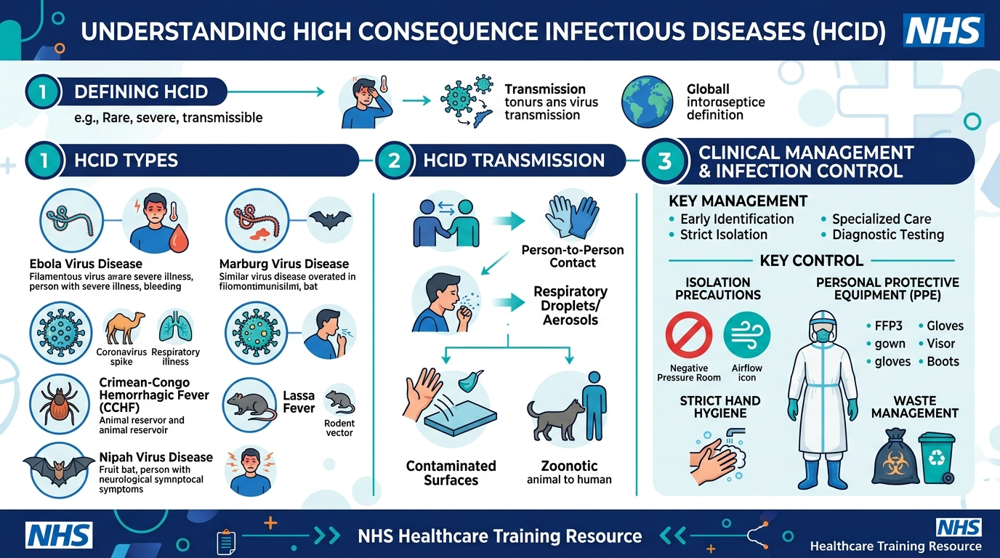
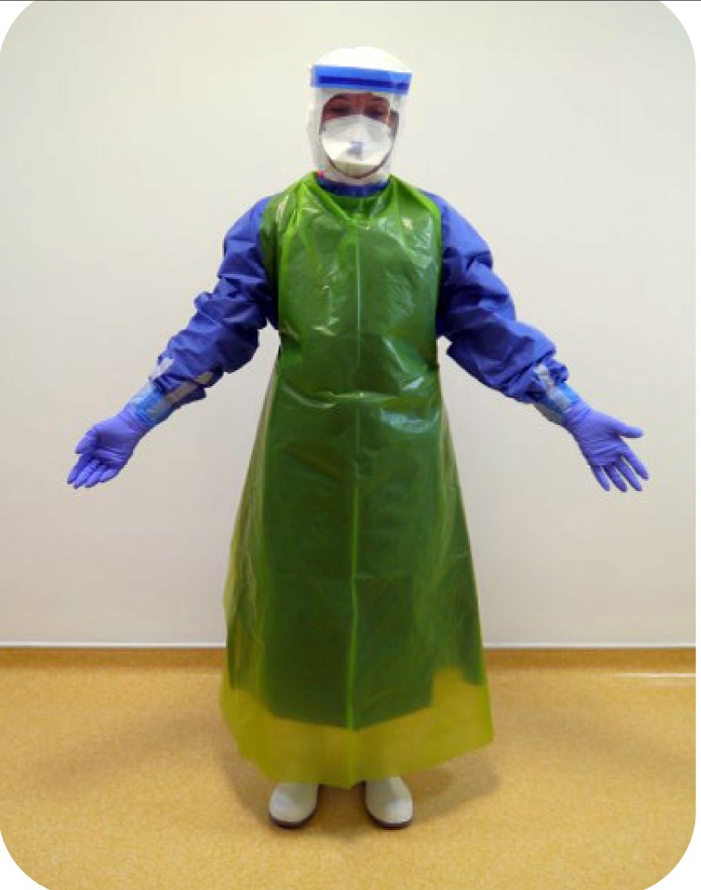
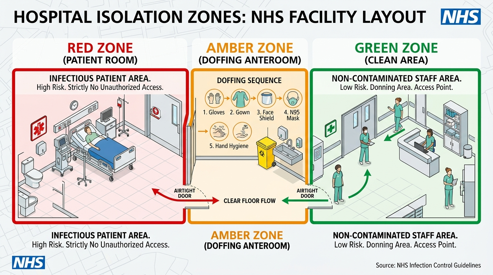
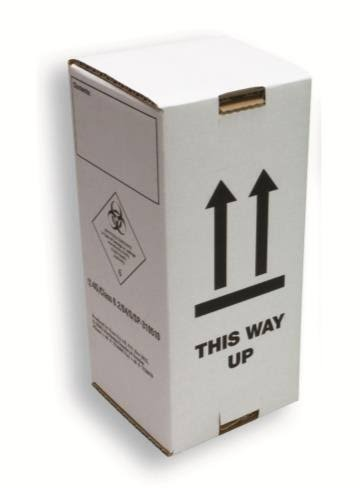

- Answer All Assessment Items: Complete all 27 knowledge check questions and 10 clinical case scenarios across the 10 modules.
- Pathogen Sorter: Complete the Interactive Pathogen Classification Sorter in Module 3.
- Review Links & Watch Videos: Click and review all embedded guidance links and watch all required video guides.
- Mark Modules Complete & Pass Mark: Click the "Click to Mark Module Complete" button at the end of each module. Staff must achieve an overall score of 80% or higher (at least 31/38 correct) to pass the course.
Learning Objectives
- Understand the formal UK definition of a High Consequence Infectious Disease (HCID).
- Recognise the distinction between Contact HCIDs and Airborne HCIDs.
- Identify key UK and NHS Wales organisations responsible for HCID governance and outbreak management.
What is an HCID?
A High Consequence Infectious Disease (HCID) in the UK is defined as an acute infectious disease that typically has a high case-fatality rate, may not have effective prophylaxis or treatment, is often difficult to recognize and detect rapidly, and requires enhanced infection prevention and control (IPC) to protect staff and the public.
The UK has a highly structured response system for HCIDs, coordinated by the UK Health Security Agency (UKHSA) and NHS England/devolved administrations, ensuring that patients are treated in specially designated High Level Isolation Units (HLIUs) across the country.

Classification
To safely manage infection risks, the UK categorises HCIDs into two main groups based on their primary route of transmission:
- Contact HCIDs: Spread primarily by direct contact with an infected patient or infected bodily fluids, tissues, and other materials, or by indirect contact with contaminated materials and fomites. Examples include Ebola and Lassa fever.
- Airborne HCIDs: Spread by respiratory droplets or aerosol transmission, in addition to contact routes. These present a higher transmission risk in healthcare settings and require strict respiratory protection. Examples include MERS and Avian Influenza.
- HCID Definition & Criteria: UKHSA defines HCIDs as acute infectious illnesses with high case-fatality rates, potential for rapid healthcare-associated spread, and an absence of effective licensed treatment or prophylaxis.
- Impact of Classification on Clinical Practice: Categorisation into Contact vs Airborne dictates whether respiratory aerosol protection (fit-tested FFP3 respirator/PAPR) and negative pressure isolation are mandatory, or fluid-impermeable contact protection alone.
- Initial Triage Escalation Pathway: Triage nurses suspecting an HCID must isolate immediately in a single room with the door closed if available, notify the Nurse in Charge and the Emergency Physician in Charge (EPIC) and await further instructions.
- UK Health Security Agency (UKHSA): Sets national guidance and manages the public health response.
- Imported Fever Service (IFS): A 24/7 specialist advisory service (0844 778 8990) for clinicians managing returning travellers with fever.
- Rare and Imported Pathogens Laboratory (RIPL): Provides specialist diagnostic testing for Category A pathogens.
Module 1 Knowledge Check (3 Questions)
Pass mark: 80%+ overall1. A patient presenting with an acute febrile illness is assessed against the UK Health Security Agency (UKHSA) High Consequence Infectious Disease (HCID) definition. Which combination of clinical and epidemiological factors mandates immediate HCID pathway activation?
2. How does the UK classification of HCIDs into "Contact" versus "Airborne" categories directly dictate emergency clinical nursing management?
3. A triage nurse in an Emergency Department suspects a returning traveller may meet the clinical case definition for a HCID. What is the correct initial clinical escalation sequence before moving the patient?
Learning Objectives
- List major Contact HCIDs including Viral Haemorrhagic Fevers (VHFs).
- Understand transmission routes and incubation windows.
- Identify travel history red flags during clinical assessments.
Common Contact HCIDs
Contact HCIDs are typically Viral Haemorrhagic Fevers (VHFs). They are not spread easily from person to person through the air, but transmission occurs through direct contact with blood or other body fluids (such as vomit, diarrhoea, urine, breast milk, sweat, semen) of an infected person who has symptoms, or through contact with objects contaminated with these fluids.
| Disease | Endemic Regions | Incubation Period |
|---|---|---|
| Ebola Virus Disease | Sub-Saharan Africa (e.g., DRC, Guinea, Sierra Leone) | 2-21 days |
| Lassa Fever | West Africa (e.g., Nigeria, Sierra Leone, Liberia) | 2-21 days (typically 7-10) |
| Crimean-Congo Haemorrhagic Fever (CCHF) | Africa, Balkans, Middle East, Asia | 1-13 days (tick bite: 1-3 days; blood exposure: 5-6 days) |
| Marburg Virus Disease | Sub-Saharan Africa | 2-21 days |
| Severe Fever with Thrombocytopenia Syndrome (SFTS) | East Asia (China, Japan, South Korea) | 7-14 days |
When assessing a patient presenting with fever (≥ 38°C) or history of fever within the past 24 hours, nursing staff must establish a detailed travel history covering the preceding 21 days (the maximum incubation window for all major Contact HCIDs including Ebola, Marburg, Lassa, and CCHF).
Transmission Dynamics & Clinical Features:
- Transmission Window: Ebola patients become contagious only once clinical symptoms (fever, headache, lethargy) develop. As the illness progresses, viral load in blood and body fluids increases exponentially. Asymptomatic incubation carries no transmission risk.
- VHF Manifestations: Contact HCIDs (e.g. Lassa, CCHF) typically present with insidious fever, facial edema, mucosal bleeding, and severe myalgia following tick bites or exposure to rodent urine / infected bodily fluids in endemic regions.
- Red Flags: Travel to endemic areas within 21 days, contact with VHF cases, healthcare visits or funeral rites in outbreak zones, or tick bites in CCHF endemic areas.
Module 2 Knowledge Check (3 Questions)
Pass mark: 80%+ overall1. A nurse is triaging a 34-year-old aid worker who returned from an Ebola-endemic region 14 days ago and developed a fever (38.6°C) yesterday. Regarding transmission dynamics of Ebola Virus Disease (EVD), which clinical statement is accurate?
2. Which constellation of clinical manifestations and exposure risks is most characteristic of a Contact HCID such as Lassa Fever or Crimean-Congo Haemorrhagic Fever (CCHF)?
3. When triaging a febrile patient with recent international travel, why must clinical assessors investigate travel and exposure risks covering the full preceding 21 days?
Learning Objectives
- Identify Airborne HCIDs including MERS, Avian Influenza, Nipah, and Pneumonic Plague.
- Understand airborne transmission hazards in clinical spaces.
- Differentiate respiratory protection requirements from standard PPE.
Common Airborne HCIDs
Airborne HCIDs pose a significant risk in healthcare environments because they can be transmitted through respiratory droplets or aerosols, making strict control of the air environment critical. This necessitates the use of respiratory protection (FFP3 respirators) and, where possible, negative pressure isolation rooms.
| Disease | Endemic Regions / Exposures | Incubation Period |
|---|---|---|
| Middle East Respiratory Syndrome (MERS) | Arabian Peninsula (esp. Saudi Arabia). Linked to dromedary camels. | 2-14 days |
| Avian Influenza (e.g., H5N1, H7N9) | Global. Linked to exposure to infected live or dead poultry/wild birds. | 2-8 days (up to 17 days) |
| Nipah Virus | South and Southeast Asia (e.g., Bangladesh, India). Linked to bats, pigs, and date palm sap. | 4-14 days |
| Pneumonic Plague | Madagascar, DRC, Peru, USA. Spread by droplets from infected persons/animals. | 1-7 days |
- MERS-CoV: Endemic to the Arabian Peninsula; strongly associated with exposure to dromedary camels or camel products. Presents with fever, dyspnoea, and dry cough.
- Avian Influenza A(H5N1): Linked directly to exposure to sick or dead domestic poultry, wild birds, or live bird markets in endemic areas.
- Respiratory PPE Requirements: Unlike contact precautions, Airborne HCIDs strictly mandate a fit-tested FFP3 respirator (or PAPR), full-face visor, fluid-resistant hood, and negative pressure isolation to protect against aerosol transmission.
Module 3 Knowledge Check (3 Questions)
Pass mark: 80%+ overall1. When assessing a returning traveller presenting with acute fever and severe lower respiratory symptoms (cough and dyspnoea), which specific epidemiological criteria strictly define risk for MERS-CoV as an Airborne HCID?
2. When caring for a patient suspected of an Airborne HCID (e.g. MERS-CoV or Avian Influenza A/H5N1), which personal protective equipment items are strictly mandatory for respiratory and facial protection?
3. An ED nurse is taking a history from a patient with severe acute respiratory distress. Which specific exposure detail increases clinical suspicion for Avian Influenza A(H5N1) as opposed to MERS-CoV?
🧪 Interactive Exercise: Sort Contact vs Airborne HCID Pathogens
Test your understanding of UK HCID classifications. Click or tap a pathogen below to select it, then click the correct containment box (or drag and drop on desktop) to categorise it:
Learning Objectives
- Apply ABUHB Action Card 1 for Emergency Physicians in Charge (EPIC) & Senior Clinicians.
- Execute pre-entry tele-consultation (via patient mobile phone) & 6-point travel screening before entering isolation.
- Utilize the UKHSA/ACDP Viral Haemorrhagic Fever (VHF) Risk Assessment Algorithm (October 2024) to categorise cases.
- Navigate Grange University Hospital access pathways & Cubicle 27 entry/fit-testing criteria.
- Execute national escalation pathways (IFS 0844 778 8990, AWARe 0300 00 300 32, NHSE EPRR 0333 2005022).
🌐 Official Live VHF Risk Assessment Algorithm (October 2024)
Access the official UK Health Security Agency (UKHSA / ACDP) live risk assessment algorithm and country guidance. Clicking the link below opens in a separate browser tab so clinicians can switch back and forth between the training course and the live diagnostic algorithm:
📋 Open Live VHF Risk Assessment Algorithm (GOV.UK PDF) ↗ Opens in New Tab (Course Stays Active)ABUHB Action Card 1: Emergency Physician in Charge (EPIC) Protocol
The Emergency Physician in Charge (EPIC) and Senior Medical Assessors at The Grange University Hospital (GUH) must follow a strict step-by-step protocol upon receiving a triage alert for a suspected HCID case.
Respond immediately to the Triage Nurse or Nurse in Charge (NIC) alert of a suspected HCID case.
IF referred from MIU or ED Triage: Take a full clinical & travel history from the patient via their own personal mobile phone if possible. Assess observations. If normal, can the patient be safely sent to isolate at home and managed in the community? If so, contact the Duty Infectious Disease Consultant / Microbiologist via GUH Switchboard - Phone 100 and ask to bleep Microbiologist on call.
Confirm HCID risk with NIC and obtain detailed history via mobile phone covering:
- a. Dates of travel: Preceding 6 weeks (and specifically 21-day incubation window).
- b. Country(ies) visited: Cross-reference with active High consequence infectious disease: country specific risk - GOV.UK ↗.
- c. Region(s) / city(ies) visited: Rural vs urban settings, known outbreak zones.
- d. Activities involved: Healthcare work, bat/cave visits, animal slaughter, tick bites, funeral rites, bushmeat.
- e. Healthcare admissions: Any attendance or admission to local healthcare facilities abroad?
- f. Known HCID exposure: Direct contact with body fluids, cases, or clinical specimens?
Utilize the UKHSA/ACDP VHF Risk Assessment Algorithm (October 2024) ↗:
- Minimal Risk (Yellow Box): Continue with standard infection control precautions & local guidance. Urgent malaria screen & routine bloods.
- At Risk / High Risk (Orange Box): Liaise with NIC for urgent transfer to Cubicle 27 (GUH ED) and continue strict VHF isolation precautions.
- Unstable / Very Sick Patient: Bring patient direct to Cubicle 27 - Ensure Resus trolley & HCID trolley are staged outside the cubicle.
Discuss the case with the Duty Infectious Disease Consultant / Microbiologist - Dial 100 on GUH Switchboard - The Consultant Microbiologist will contact the Imported Fever Service (0844 778 8990) and liaise with EPIC for diagnostic sample authorization.
Allocate a senior HCID-trained clinician to enter Cubicle 27 - Cubicle Telephone Ext: 23290 - ONLY staff who have been FIT Tested in the last 3 years and have had recent HCID donning/doffing & sampling training may enter. Don full Unified HCID PPE supervised by a qualified Buddy.
If diagnostic blood samples test positive for a Category A or B disease, liaise immediately with the NHS England Emergency Preparedness, Resilience & Response Team (NHSE EPRR: 0333 2005022 / 020 8168 0053) to arrange patient transfer to a national High-Level Isolation Unit (HLIU).
The Grange University Hospital Access Pathways
Specific patient arrival corridors are established across clinical departments at GUH to isolate suspected HCID cases without contaminating main hospital spaces:
- Adult Patients (ED / MAU / SAU): Patient enters via safe corridor on Level 1 & escorted to Respiratory Assessment Zone (MAU 2) into negative pressure Cubicle 61 (or ED Cubicle 27). If Critical Care is required, transfer to negative pressure Cubicle 1 - BL43. Dedicated ring-fenced donning & doffing anterooms must be maintained.
- Paediatric Patients: Patient enters via Level 1 safe corridor & escorted to Ward B1 into negative pressure room C1.50.
- Maternity Patients: Patient enters via Level 1 safe corridor & escorted to Ward C3 via lift 10 or 11 into Room 1.
Interactive Doctor Case Simulator (VHF Algorithm Decision Tool)
Test your clinical decision-making by evaluating the following real-world clinical scenarios against the NHS Viral Haemorrhagic Fever Risk Assessment Algorithm (October 2024):
Active Country-Specific Risk Lookup Tool
Clinicians can check whether there are active HCID outbreaks or endemic risk factors in specific countries to assist in evaluating the clinical vignettes below:
🗺️ High consequence infectious disease: country specific risk - GOV.UK ↗ Opens in New TabA 31-year-old nurse returned 10 days ago from an Ebola outbreak zone in DRC. Presents to GUH ED with fever (38.9°C), severe diarrhoea, and epigastric pain. She reports caring for a febrile patient in a rural clinic without complete protective eyewear.
Doctor Decision Required: How should this case be categorised under the VHF Risk Assessment Tool?
A 48-year-old executive returned from Lagos, Nigeria 8 days ago. Presents with low-grade fever (38.1°C), mild headache, and fatigue. He stayed strictly in a 5-star city hotel, attended indoor meetings, had no contact with healthcare facilities, animals, bat caves, or sick individuals.
Doctor Decision Required: How should this case be categorised under the VHF Risk Assessment Tool?
A 54-year-old male returned 6 days ago from Riyadh, Saudi Arabia, where he visited traditional camel markets. Presents with acute respiratory distress, bilateral pulmonary rales, productive cough, and fever (38.7°C).
Doctor Decision Required: Which clinical pathway applies to this presentation?
Emergency Contact Directory & Escalation Call Tree
Keep these critical contact numbers accessible for immediate escalation at The Grange University Hospital:
Duty Consultant Microbiologist
Ask switchboard operator to bleep the Microbiologist on call immediately for initial risk discussion & sample clearance.
Cubicle 27 Telephone (GUH ED)
Direct telephone line inside ED Cubicle 27 for communication with assessing clinicians inside the isolation zone.
Imported Fever Service (IFS)
24/7 UKHSA consultant-to-consultant advisory service for authorizing Category A/B testing and RIPL Porton Down transport.
Public Health Wales / AWARe
Local Health Protection Team notification line for contact tracing, public health actions, and regional surveillance.
NHSE EPRR Duty Officer
Emergency Preparedness, Resilience & Response line to arrange urgent patient transfer to a national High-Level Isolation Unit (HLIU).
Module 4 Knowledge Check (3 Questions)
Pass mark: 80%+ overall1. What is the primary initial action for an EPIC or senior doctor when alerted to a suspected HCID patient in triage or referred from MIU?
2. Under ABUHB policy for The Grange University Hospital, which requirements MUST be satisfied before a doctor enters Cubicle 27 to assess a suspected HCID case?
3. If diagnostic blood samples test positive for a Category A or B HCID pathogen, which national duty officer is contacted to arrange urgent transfer to a High-Level Isolation Unit (HLIU)?
Learning Objectives
- Apply the "Isolate, Assess, Escalate" framework immediately upon suspicion.
- Understand the process for contacting the Imported Fever Service (IFS).
- Learn the referral and transfer protocol for High Level Isolation Units (HLIUs).
Immediate Actions: Isolate, Assess, Escalate
If an HCID is suspected based on symptoms and travel history, do not wait for test results. Rapid action is vital to prevent transmission.
- Isolate: Immediately place the patient in a single side room, ideally with en-suite toilet facilities. If an Airborne HCID is suspected, this must ideally be a negative pressure room. Ensure the door remains closed.
- Assess Remotely: Do not physically enter the room unless absolutely necessary. Conduct initial assessments via telephone or visually through a glass panel.
- Escalate: Contact the local Microbiology, Virology, or Infectious Diseases Consultant immediately.
- Triage Priority: Immediately escort the patient into a single negative-pressure or isolation room, close the door, and don PPE before physical examination.
- Microbiology Consultant Escalation ONLY: The Imported Fever Service (IFS: 0844 778 8990) is a 24/7 national expert advisory service that must ONLY be contacted by the Duty Microbiology Consultant (and NOT directly by the EPIC, ED Consultant, Registrar, or Senior Clinician). The EPIC / Senior Clinician must bleep the Duty Consultant Microbiologist via GUH Switchboard (Dial 100), who will initiate the consultant-to-consultant call to the IFS to authorise diagnostic testing and national pathways.
- Emergency Stabilization: If a suspected HCID patient requires urgent emergency resuscitation (e.g. airway management or IV fluid resuscitation) prior to transfer, care must be delivered strictly inside the designated isolation room with all staff wearing full Unified HCID PPE.
Module 5 Knowledge Check (3 Questions — EPIC & Senior Clinician Focus)
Pass mark: 80%+ overall1. The EPIC is alerted to a 44-year-old traveller presenting to ED Triage with fever (38.8°C), severe headache, and vomiting 12 days after returning from a West African region with active Lassa fever. What is the immediate clinical management directive required from the EPIC?
2. An ED Consultant (EPIC) has isolated a patient suspected of a viral haemorrhagic fever (VHF) after identifying high-risk exposures. Which mandatory escalation step must be performed to obtain national diagnostic testing authorization and specialist clinical advice?
3. A patient isolated in Cubicle 27 with suspected Airborne HCID (e.g. MERS-CoV) develops acute respiratory distress (SpO2 84% on air) and requires urgent medical resuscitation and airway management. What is the EPIC's mandatory directive regarding resuscitation location and clinical team PPE?
Learning Objectives
- Identify all components of the Unified HCID PPE Ensemble.
- Understand the requirement for FFP3 fit testing and triple gloving.
- Recognise the critical role of the 'Buddy' during donning and doffing.
The Unified Ensemble
The UK uses a single Unified HCID Assessment PPE Ensemble for assessing all suspected HCID cases (both contact and airborne) to standardize training and reduce errors. Below is the official UK assessment PPE ensemble with labeled components.

Ensemble Component Key
🎥 Official Donning Video
Scan QR code or click below to watch the official step-by-step HCID PPE donning procedure:
Watch Donning Video ↗ Opens video in a new tab (Course stays open)🎥 Official Doffing Video
Scan QR code or click below to watch the official step-by-step HCID PPE doffing procedure:
Watch Doffing Video ↗ Opens video in a new tab (Course stays open)The Buddy System & Triple Gloving Rationale
Ensemble Rationale: The UK utilises a single Unified HCID Assessment PPE Ensemble for both Contact and Airborne HCIDs to standardise practice, simplify clinical training, reduce cognitive burden, and significantly minimise doffing self-contamination errors.
Triple Gloving Structure:
- Inner Gloves: Short examination gloves tucked securely under the gown sleeve cuff.
- Middle Gloves: Long-cuffed nitrile gloves pulled over the gown sleeve and taped securely to the gown material using microporous tape.
- Outer Gloves: Standard disposable gloves worn over taped middle gloves, replaced between clinical tasks and removed first during doffing.
Buddy Responsibilities: The designated Buddy must read instructions aloud step-by-step from a standardised checklist, conduct visual safety inspections, and direct every phase of donning and doffing to enforce strict safety compliance.
Module 6 Knowledge Check (3 Questions)
Pass mark: 80%+ overall1. What is the primary rationale for adopting a single "Unified HCID Assessment PPE Ensemble" for evaluating suspected cases of both Contact and Airborne HCIDs?
2. In the UK Unified HCID Assessment PPE Ensemble, how is the triple-gloving protocol structured to maintain barrier integrity during patient procedures?
3. What is the mandatory role of the designated "Buddy" during the donning and doffing process?
Learning Objectives
- Understand why doffing presents the highest contamination risk.
- Enforce the "No-Touch Policy" strictly.
- Recognise dangerous "Red Zone" subconscious behaviours.
Critical Doffing Principles & Emergency Protocols
Doffing (removing PPE) is universally recognised as the most high-risk phase for healthcare worker self-contamination. External surfaces of the gown, visor, gloves, and apron become heavily contaminated with infectious bioburden during patient care.
- The No-Touch Policy: The wearer must never touch contaminated outer PPE surfaces with bare skin or clean inner gloves.
- Supervised Doffing: Doffing must occur slowly, methodically, and strictly under Buddy direction in the Amber Zone anteroom.
- Emergency PPE Breach Protocol: If PPE tears, is punctured, or skin exposure occurs inside the Red Zone: alert the Buddy immediately, exit to the Amber Zone anteroom, perform emergency doffing under supervision, decontaminate exposed skin, and report immediately for occupational health post-exposure risk assessment.
Module 7 Knowledge Check (3 Questions)
Pass mark: 80%+ overall1. Why is the doffing (removal) phase of HCID PPE universally recognised as carrying the highest risk of healthcare worker self-contamination?
2. Under the strict "No-Touch Policy" during doffing, which action is strictly prohibited?
3. If a nurse experiences a PPE breach (e.g. gown tear or glove puncture) or accidental skin exposure while inside the Red Zone, what is the immediate emergency protocol?
Learning Objectives
- Select appropriate clinical isolation environments (Cubicle 27 negative pressure suite vs standard isolation).
- Master the 3-zone clinical model (Red, Amber, Green) and unidirectional airflow control.
- Enforce Category A infectious waste handling and 10,000 ppm chlorine environmental decontamination.
What is a Negative-Pressure Isolation Room & Why is it Mandatory for Airborne HCIDs?
A Negative-Pressure Isolation Room (such as Cubicle 27 at GUH Emergency Department) utilizes specialized mechanical ventilation to maintain the air pressure inside the patient room at a lower level than the surrounding anteroom (Amber Zone) and clean hospital corridors (Green Zone).
- Why Negative Pressure is Required (Inward Airflow): Air naturally flows from higher pressure to lower pressure. Because the isolation room is under negative pressure, clean air is continuously pulled inward into the room whenever doors are opened. Exhandled air is continuously extracted via dedicated ductwork through high-efficiency particulate air (HEPA) filters before being safely exhausted outdoors.
- The Hazard of Standard Cubicles & Side Rooms (Outward Airflow Risk): In a standard side room, cubicle, or assessment space, opening the door or performing aerosol-generating procedures (AGPs) causes room air to rush outwards into clean corridors and patient waiting spaces. If an Airborne HCID (e.g. MERS-CoV, Avian Flu A/H5N1, or Pneumonic Plague) is isolated in a standard room, microscopic infectious aerosols linger in the air and escape into public corridors, exposing unprotected staff and patients.
Clinical Zoning & Containment Rules
To prevent contamination spread, clinical isolation spaces are strictly divided into 3 containment zones:

- Red Zone Patient isolation room (highly contaminated). Full Unified PPE required. Direct care only.
- Amber Zone Anteroom transition space. Serves specifically for supervised PPE doffing, hand hygiene, and skin decontamination between Red and Green zones.
- Green Zone Clean hospital corridors and staff office spaces. No contaminated PPE or equipment permitted.
Unidirectional Staff Movement: Movement through clinical zones is strictly unidirectional: Green Zone → Amber Zone (donning) → Red Zone (entry); and exiting strictly Red Zone → Amber Zone (doffing/decontamination) → Green Zone (clean exit).
Category A Waste Disposal: All solid waste, linen, and disposable equipment generated within the Red Zone is classified as Category A Infectious Waste and must be sealed in UN-approved rigid, leak-proof containers for high-temperature incineration.
Module 8 Knowledge Check (3 Questions — Advanced Isolation & Infection Control)
Pass mark: 80%+ overall1. A 38-year-old patient presents to ED Triage with acute fever (39.1°C), severe dry cough, and rapidly worsening dyspnoea 7 days after returning from an endemic region with reported airborne pathogen transmission. Which clinical room placement is appropriate for isolating this patient?
2. When managing environmental decontamination and waste disposal for a patient isolated in the Red Zone with suspected Viral Haemorrhagic Fever (VHF), which stringent infection control standard is legally and clinically mandatory?
3. During the clinical management of an Airborne HCID patient in the 3-zone model (Red/Amber/Green), an alarm indicates a pressure drop and loss of negative pressure gradient between the Red Zone (patient room) and Amber Zone (anteroom). What is the immediate infection control directive?
Learning Objectives
- Understand the risks associated with diagnostic sampling.
- Apply the UN Class 6.2 Triple Packaging System.
- Coordinate safely with microbiology and RIPL.
Safe Sampling Protocols & Packaging
Diagnostic sampling (blood draws and swabbing) is a high-risk procedure for HCID transmission. Samples must NEVER be sent through the pneumatic tube transport system (due to breach spillage risk) or to routine hospital laboratories (because automated blood analysers generate high-risk aerosols and contaminate internal fluidic pathways, leading to lab shutdown).
🌐 Rare and Imported Pathogens Laboratory (RIPL) Sample Submission Form
Access the official UKHSA / RIPL testing request and specimen submission form (P1 Form). All Category A diagnostic specimens sent to UKHSA Porton Down must be accompanied by this completed form and authorized by the Duty Microbiologist via the Imported Fever Service (IFS):
📝 Rare and Imported Pathogens: Testing Form to Submit Sample (GOV.UK) ↗ Opens in New TabSpecimen Packaging & Transport Protocol
To safely transport Category A diagnostic specimens to the Rare and Imported Pathogens Laboratory (RIPL) at UKHSA Porton Down, strict UN Class 6.2 Category A Triple Packaging rules are enforced:

Step-by-Step Packaging Procedure
🎥 Official Sample Handling Video Guide
Scan the QR code with your mobile device or click the link below to watch the official video demonstration for HCID clinical sample handling:
Watch Video: Clinical Sample Handling for HCID Patients ↗ Opens video in a new tab (Course stays open) 📄 Download HCID Clinical Sampling Poster (PDF) ↗ Opens PDF poster in a new tabModule 9 Knowledge Check (3 Questions)
Pass mark: 80%+ overall1. Why are routine hospital laboratory analysers and pneumatic tube transport systems strictly forbidden for processing blood specimens from suspected HCID patients?
2. In accordance with UN Class 6.2 Category A transport regulations, how must diagnostic blood samples for RIPL testing be structured in the Triple Packaging System?
3. Which national specialist reference laboratory is designated to receive and process Category A diagnostic specimens for suspected HCID pathogens in the UK?
Learning Objectives
- Apply comprehensive course knowledge to 10 real-world Emergency Department clinical vignettes.
- Execute rapid triage isolation, Action Card 1 activation, and IPC escalation decisions under pressure.
- Master clinical decision-making for Airborne vs Contact HCID pathways, PPE doffing safety, and Category A sampling.
Test your emergency clinical decision-making across 10 real-world ED scenarios. Review patient vital signs, evaluate clinical risks against UKHSA guidance, and select the single most appropriate clinical decision button below.
Clinical Consultation: The Triage Nurse bleeps you (the Duty ED Clinician) regarding a 34-year-old patient at the Triage Desk presenting with fever (38.8°C), severe headache, and muscle pain 8 days after returning from the Democratic Republic of Congo. The patient reports visiting local healthcare clinics during their stay.
Based on the UKHSA VHF Risk Algorithm and Country Risk List, how do you classify this patient's risk and where do you direct immediate isolation?
Clinical Consultation: A 48-year-old traveller presents to ED Triage with fever (38.9°C), severe dry cough, and acute shortness of breath 6 days after returning from Riyadh, Saudi Arabia, where he visited traditional camel farms and spent time in a hospital ED. The Triage Nurse bleeps you for immediate placement advice.
Which immediate clinical isolation and respiratory PPE pathway must you direct the triage nurse to activate?
Clinical Consultation: A 50-year-old executive returned from Lagos, Nigeria 10 days ago presenting with low-grade fever (38.1°C) and fatigue. He stayed strictly in a 5-star city hotel, attended indoor business conferences, and had no contact with healthcare facilities, animals, bat caves, or sick individuals.
Under the UKHSA VHF Risk Assessment Tool, how do you categorize this patient and direct immediate management?
Clinical Consultation: A 31-year-old aid worker presents at Triage with high fever (39.4°C), severe vomiting, and abdominal pain 12 days after returning from Uganda. She discloses attending a traditional burial ceremony of a family member who died from an undiagnosed febrile illness with bleeding.
How do you classify this case and what immediate isolation action do you direct?
Clinical Consultation: A 27-year-old researcher presents at Triage with fever (38.7°C), conjunctival redness, and petechiae 14 days after exploring bat-inhabited caves and rural rodent-infested grain stores in Beni Department, Bolivia. The Triage Nurse calls for immediate placement advice.
Based on the UKHSA guidance for South American Arenaviruses (Machupo / Chapare VHF), how do you direct immediate care?
Clinical Consultation: A 29-year-old healthcare volunteer presents to ED Triage 6 days after returning from Sierra Leone. She reports having direct blood and body fluid exposure while treating a confirmed Lassa fever patient at a rural clinic. However, she is completely afebrile (36.6°C) and reports NO fever, headache, sore throat, or any clinical symptoms.
Under UKHSA and Public Health Wales guidance, how do you categorize an asymptomatic person with high-risk VHF exposure and direct management?
Clinical Context: The EPIC has isolated a suspected Viral Haemorrhagic Fever patient in Cubicle 27 and completed the 6-point travel screening and UKHSA VHF Risk Algorithm. Formal authorization for Category A diagnostic testing and national HLIU pathway activation is urgently required. Who is legally and clinically authorized to contact the 24/7 Imported Fever Service (IFS: 0844 778 8990)?
Clinical Context: A senior clinician has completed a blood draw inside Cubicle 27 (Red Zone) on a suspected HCID patient and steps into the Amber Zone anteroom to doff their Unified HCID PPE. Which mandatory safety rule governs the doffing procedure inside the Amber Zone?
Clinical Context: Venous blood specimens have been obtained from a high-risk suspected HCID patient inside Cubicle 27 for RIPL testing at UKHSA Porton Down. How must these Category A diagnostic specimens be packaged and dispatched to the laboratory?
Clinical Context: An Emergency Department Duty Clinician is assigned to enter Cubicle 27 to assess a patient with suspected Airborne HCID (MERS-CoV). During the safety pre-check in the Green Zone, the clinician reveals that they recently FAILED their qualitative FFP3 respirator mask fit test and have not yet passed a fit test on another FFP3 model. Can this clinician enter Cubicle 27 wearing an FFP3 mask to assess or treat the patient?
Thank You for Completing the HCID Training Guide!
Emergency Department — Aneurin Bevan University Health BoardA huge thank you for completing this clinical preparedness course! Your dedication to infection prevention, rapid triage isolation, and safe patient care helps protect staff, patients, and the wider community at The Grange University Hospital and across ABUHB.
🌐 ED HCID Intranet SharePoint Page
Our Emergency Department has a dedicated HCID SharePoint page accessible on our NHS Wales Intranet. It houses all operational action cards, department pathways, policy documents, and external links covered in this course for convenient future reference.
Available on NHS Wales Intranet📧 ED Practice Educators Support
For additional clinical training information, practice queries, or questions raised during this course, please contact the ED Practice Educators team:
✉️ ABB.EDPracticeEducators@wales.nhs.uk🛡️ IPaC Infection Control Team
For specialist infection prevention and control guidance, policy enquiries, or IPC risk assessments, please contact the IPaC Infection Control team:
✉️ infection.control3@wales.nhs.ukCourse Assessment Summary
Answer all 27 knowledge check questions + complete the Interactive Pathogen Sorter + complete all 10 Module 10 Clinical Case Scenarios (38 assessment items total across 10 modules). You must achieve a pass mark of 80% or higher (at least 31/38 correct) to pass the course assessment and unlock your official certificate.